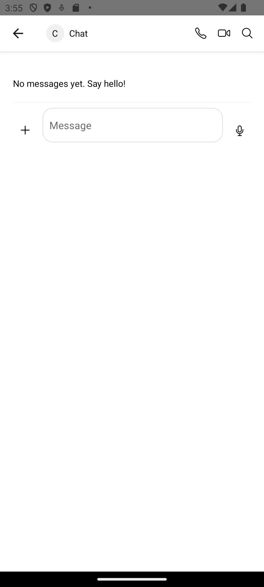

Responding – Reading and Replying in a Strand
Based on: design/stories/responding.md
Persona: Alice (active participant)
Preconditions: Alice and Susan have an ongoing conversation; locale=en
1) Pick up where you left off
Alice opens the strand with Susan and reviews the latest messages. Bubbles group by sender so it’s easy to follow the flow.

2) Send a quick reply
She types a short note and taps Send. Her message appears as an outgoing bubble at the tail of the conversation.
3) Find other conversations (optional)
If she needs another strand, Alice searches by name and opens the result she needs.
Alternates
- Empty strand: If there’s nothing yet, the conversation gently invites her to say hello.
